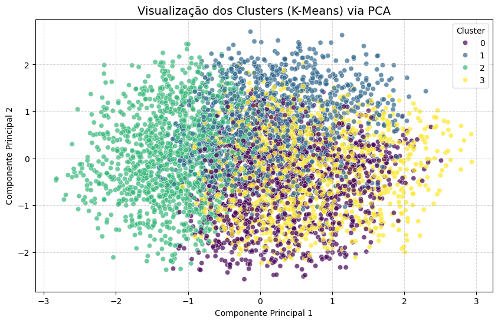

Diego Soares da Paz
Sobre Mim
Conheça minha trajetória acadêmica e profissional na área de tecnologia e inovação.

Diego Soares da Paz
Estagiário em Ciência de Dados5+
Anos Exp.
USP
Formação
8+
Tecnologias
Arquitetura de Dados, IA e Visão de Negócios
Sou um profissional focado em resolver problemas complexos através de dados, unindo uma forte base analítica — construída entre a Física Computacional e o Bacharelado em Sistemas de Informação na USP (previsão de conclusão 12/2027) — com o desenvolvimento de software de ponta a ponta.
Minha trajetória me deu uma visão única do ciclo de vida dos dados. Tendo atuado no mercado digital, onde comecei como Estagiário de Estratégia de Contas e fui promovido a Analista de Mídia, entendo profundamente as métricas de negócio e o comportamento do cliente. Hoje, aplico essa visão de negócios para criar modelos preditivos de Machine Learning.
Atualmente, como estagiário em Ciência de Dados na Procuradoria Geral da Fazenda Nacional (PGFN), desenvolvo inteligência artificial e Processamento de Linguagem Natural (PLN) para classificar textos judiciais. Domino a orquestração de dados ponta a ponta: desde a modelagem de bancos relacionais (PostgreSQL) e criação de APIs assíncronas (FastAPI / Django), até o deploy em ambientes conteinerizados (Docker) e integrações no Google Cloud.
Além da dedicação técnica, sou monitor de Robótica e Programação pelo programa de Ensino e Extensão da Universidade de São Paulo, onde traduzo lógica computacional para estudantes da rede pública de ensino, desenvolvendo a didática e a comunicação. Minhas ferramentas diárias incluem: Python, SQL, Scikit-Learn, FastAPI, Git e Metodologias Ágeis.
Experiência Profissional
Da otimização de funis de vendas em agências globais à aplicação de Inteligência Artificial no setor público.
Estagiário em Ciência de Dados
Procuradoria Geral da Fazenda Nacional (PGFN) | Mar 2025 - Atual
Desenvolvimento de Inteligência Artificial e Machine Learning aplicadas à classificação de textos judiciais via Processamento de Linguagem Natural (PLN). Criação de pipelines de dados em Python, integração de APIs no Google Cloud para automação de processos e planejamento de arquitetura de alta disponibilidade (failover).
Gestor de Tráfego Pago & Analista de Mídia
Growww Marketing / Media.Monks (Raccoon) | Set 2020 - Jul 2024
Evolução: Iniciou como Estagiário de Estratégia de Contas, sendo promovido a Analista de Mídias e, posteriormente, atuando como Gestor de Tráfego Pago.
Impacto: Tomada de decisões de mercado e alocação de investimentos estritamente baseadas em dados e métricas. Projetou e implementou estratégias avançadas em campanhas de mídia (Google, Facebook, LinkedIn Ads), atuando na otimização do funil de vendas, aquisição de tráfego qualificado e análise de comportamento do consumidor, fazendo a ponte direta entre a tecnologia e os objetivos de negócio do cliente.
Minhas Habilidades
Competências técnicas e interpessoais desenvolvidas ao longo da minha jornada acadêmica e profissional.
Trabalho em Equipe
Capitão da Equipe de Rugby da USP São Carlos e vivência em equipes multidisciplinares no mercado de trabalho.
Resolução de Problemas
Experiência em propor e implementar soluções técnicas como failover entre máquinas para alta disponibilidade.
Didática & Ensino
Monitor de programação, com elaboração de material didático para estudantes do ensino regular.
Criatividade & Arte
Ritmista na Bateria Universitária da USP São Carlos, conectando arte, ritmo e pensamento criativo.
Python
Ciência de dados, PLN, criação de scripts, pipelines e automação de processos.
Java
Desenvolvimento de aplicações robustas com princípios de orientação a objetos.
SQL & PostgreSQL
Modelagem, consulta e otimização de bancos de dados relacionais.
Google Cloud
Integração de APIs e automação de processos em ambiente cloud.
Git & GitHub
Versionamento de código e colaboração em projetos open source.
Docker
Containerização de aplicações e ambientes isolados.
Power BI
Análise e visualização de dados para tomada de decisão.
Metodologias Ágeis
Scrum, XP e Kanban aplicados em projetos reais.
Meus Projetos
Confira alguns dos projetos que desenvolvi durante minha trajetória acadêmica e profissional.

Otimização de Marketing e Redução de CAC: Superação das limitações dos algoritmos tradicionais em dados mistos aplicando K-Prototypes para descobrir personas de alto risco. Desenvolvimento de modelo preditivo (Regressão Logística e Random Forest) para antecipar devoluções, comprovando o valor do agrupamento matemático através de Feature Importance.
De Planilhas para Banco Relacional: Desenvolvimento de ponta a ponta de um sistema para substituir arquivos não estruturados por uma arquitetura conteinerizada em Docker. Construção de APIs REST assíncronas com FastAPI para ingestão de dados via sensores RFID, modelagem de banco de dados PostgreSQL via ORM (Alembic/SQLAlchemy) e orquestração de processos. Esta infraestrutura transacional sólida é a base que viabiliza a geração de séries temporais para futuros modelos de previsão de evasão acadêmica.

Desenvolvimento de técnicas de inteligência artificial e aprendizado de máquina aplicadas à classificação de textos judiciais. Criação de scripts e pipelines de ciência de dados em Python, integração com APIs no ambiente Google Cloud e proposta de implementação de failover entre três máquinas para assegurar alta disponibilidade dos serviços.

Elaboração de material didático e aulas de programação em Python e Scratch para estudantes do ensino regular e médio na Escola Estadual Profª Maria Ramos. Desenvolvimento de projetos práticos de programação e robótica, culminando em trabalhos finais orientados com os estudantes.
Gostou do que viu?
Confira mais projetos e contribuições no meu GitHub!
Entre em Contato
Fique à vontade para entrar em contato comigo através dos canais abaixo ou pelo formulário.
GitHub
Telefone
(16) 99628-7283